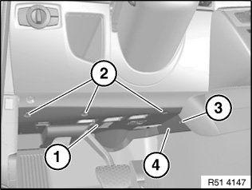

51 45 185 Removing and Installing/Replacing Panel For Pedals
51 45 185 Removing and installing/replacing panel for pedals

Release screws (1) and (2).
Release expanding rivet (3).
Pull back panel (4).
Disconnect associated plug connections and remove panel (4).

Replacement:
- Modify footwell light (1)
- If necessary, modify Bluetooth aerial (2)
- If necessary, modify speaker of hands-free system (3)
IMPORTANT:
- Disconnecting the plug connection for the hands-free system speaker results in fault memory entries in the telephone control unit (limitation in the emergency SOS call system).
- After fitting, read out fault memory and if necessary delete entries.